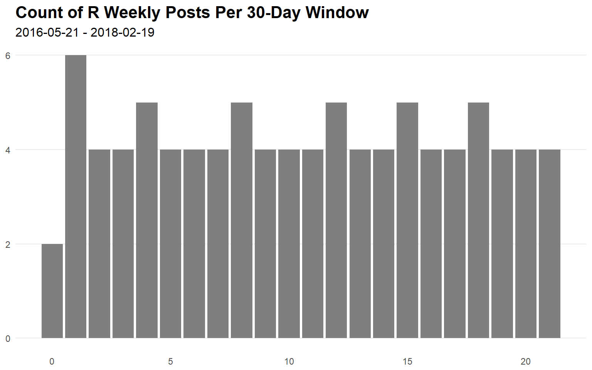
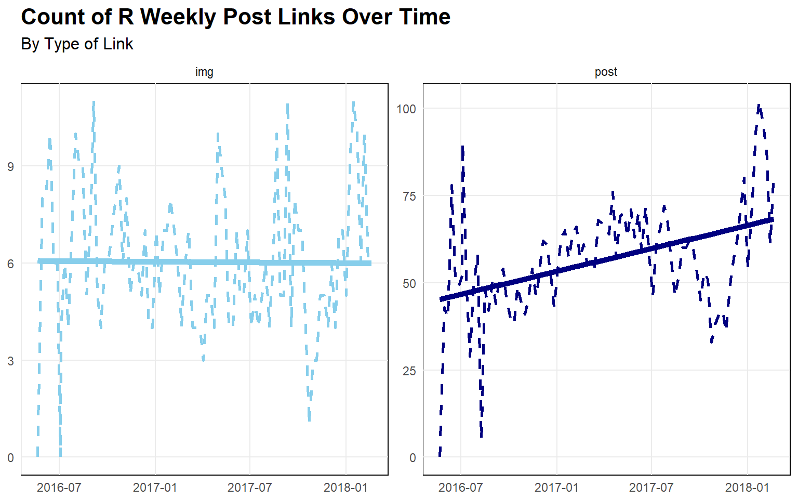
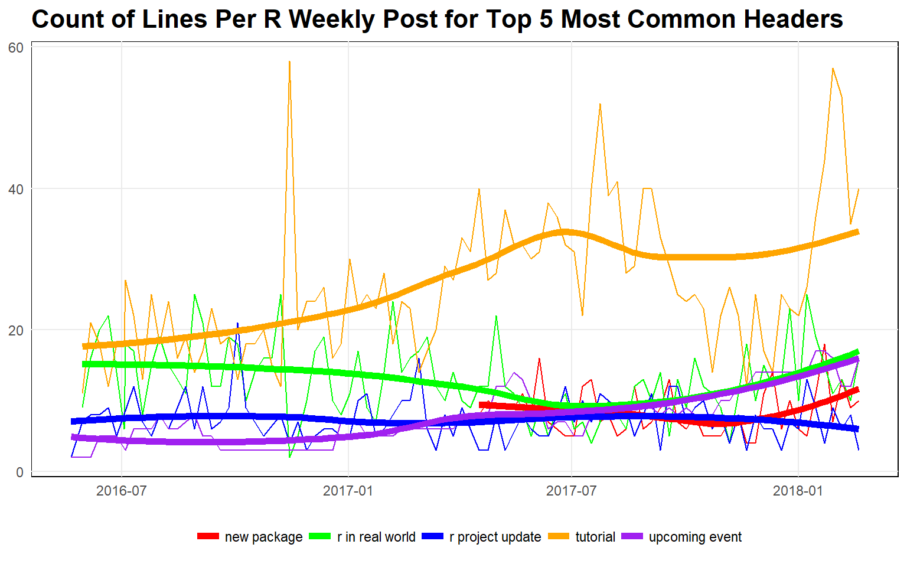
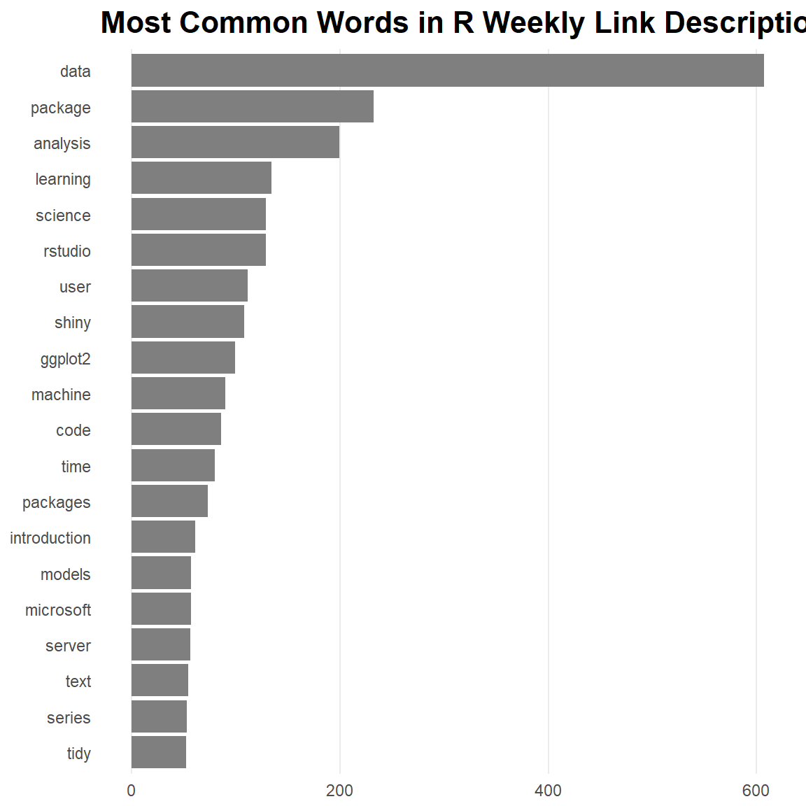
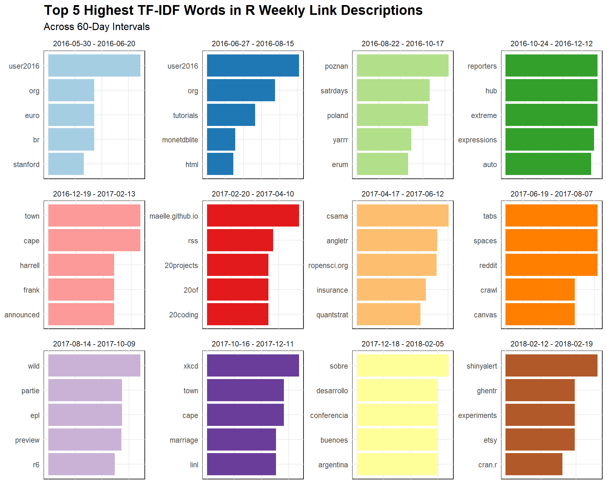

Code
library(tidyverse)
library(gh)
library(viridisLite)I’m always intrigued by data science “meta” analyses or programming/data-science. For example, Matt Dancho’s analysis of renown data scientist David Robinson. David Robinson himself has done some good ones, such as his blog posts for Stack Overflow highlighting the growth of “incredible” growth of python, and the “impressive” growth of R in modern times.
With that in mind, I thought it would try to identify if any interesting trends have risen/fallen within the R community in recent years. To do this, I scraped and analyzed the “weekly roundup” posts put together by R Weekly, which was originated in May 2016. These posts consist of links and corresponding descriptions, grouped together by topic. It should go without saying that this content serves as a reasonable heuristic for the interests of the R community at any one point in time. (Of course, the posts of other aggregate R blogs such as R Bloggers or Revolution Analytics might serve as better resources since they post more frequently and have been around for quite a bit longer than R Weekly.)
As always, it’s good to follow the best practice of importing all needed packages before beginning.
library(tidyverse)
library(gh)
library(viridisLite)For the scraping, I drew upon some the principles shown by Maelle Salmon in her write-up detailing how she scraped and cleaned the blog posts of the Locke Data blog. 1
# Reference: https://itsalocke.com/blog/markdown-based-web-analytics-rectangle-your-blog/
posts <- gh::gh(
endpoint = "/repos/:owner/:repo/contents/:path",
owner = "rweekly",
repo = "rweekly.org",
path = "_posts"
)
posts_info <- dplyr::data_frame(
name = purrr::map_chr(posts, "name"),
path = purrr::map_chr(posts, "path")
)In all, R Weekly has made 93 (at the time of writing).
Next, before parsing the text of the posts, I add some “meta-data” (mostly for dates) that is helpful for subsequent exploration and analysis.
convert_name_to_date <- function(x) {
x %>%
stringr::str_extract("[0-9]{4}-[0-9]+-[0-9]+") %>%
strftime("%Y-%m-%d") %>%
lubridate::ymd()
}
posts_info <- posts_info %>%
mutate(date = convert_name_to_date(name)) %>%
mutate(num_post = row_number(date)) %>%
mutate(
yyyy = lubridate::year(date) %>% as.integer(),
mm = lubridate::month(date, label = TRUE),
wd = lubridate::wday(date, label = TRUE)
) %>%
select(date, yyyy, mm, wd, num_post, everything())
posts_info <- posts_info %>%
mutate(date_min = min(date), date_max = max(date)) %>%
mutate(date_lag = date - date_min) %>%
mutate(date_lag30 = as.integer(round(date_lag / 30, 0)),
date_lag60 = as.integer(round(date_lag / 60, 0)),
date_ntile = ntile(date, 6)) %>%
select(-date_min, -date_max) %>%
select(date_lag, date_lag30, date_lag60, date_ntile, everything())Let’s quickly look at whether or not R Weekly has been consistent with its posting frequency since its inception. The number of posts across 30-day windows should be around 4 or 5.

Now, I’ll do the dirty work of cleaning and parsing the text of each post.
get_rweekly_post_data <- function(filepath) {
path_prefix <- "data-raw"
path <- file.path(path_prefix, path)
rgx_rmv <- "Â|Å|â€|œ|\u009d"
rgx_detect_link <- "^\\+\\s+\\["
rgx_detect_head <- "^\\s*\\#"
rgx_link_post <- "(?<=\\+\\s\\[).*(?=\\])"
rgx_link_img <- "(?<=\\!\\[).*(?=\\])"
rgx_url <- "(?<=\\().*(?=\\))"
rgx_head <- "(?<=\\#\\s).*$"
lines <- readLines(path)
lines_proc <- lines %>%
# This would be necessary if downloading directly from the repo.
# base64enc::base64decode() %>%
# rawToChar() %>%
stringr::str_split("\n") %>%
purrr::flatten_chr() %>%
as_tibble() %>%
rename(text = value) %>%
transmute(line = row_number(), text) %>%
filter(text != "") %>%
mutate(text = stringr::str_replace_all(text, rgx_rmv, "")) %>%
mutate(text = stringr::str_replace_all(text, "&", "and")) %>%
mutate(
is_link = ifelse(stringr::str_detect(text, rgx_detect_link), TRUE, FALSE),
is_head = ifelse(stringr::str_detect(text, rgx_detect_head), TRUE, FALSE)
) %>%
mutate(
link_post = stringr::str_extract(text, rgx_link_post),
link_img = stringr::str_extract(text, rgx_link_img),
url = stringr::str_extract(text, rgx_url),
head =
stringr::str_extract(text, rgx_head) %>%
stringr::str_to_lower() %>%
stringr::str_replace_all("s$", "") %>%
stringr::str_replace_all(" the", "") %>%
stringr::str_trim()
) %>%
mutate(
is_head = ifelse(line == 1, TRUE, is_head),
head = ifelse(line == 1, "yaml and intro", head)
)
# Couldn't seem to get `zoo::na.locf()` to work properly.
lines_head <- lines_proc %>%
mutate(line_head = ifelse(is_head, line, 0)) %>%
mutate(line_head = cumsum(line_head))
lines_head %>%
select(-head) %>%
inner_join(
lines_head %>%
filter(is_head == TRUE) %>%
select(head, line_head),
by = c("line_head")
) %>%
select(-line_head)
}
data <- posts_info %>%
tidyr::nest(path, .key = "path") %>%
mutate(data = purrr::map(path, get_rweekly_post_data)) %>%
select(-path) %>%
tidyr::unnest(data)Now, with the data in a workable format, we can explore some of the content.
metrics_bypost <- data %>%
group_by(name, date) %>%
summarize(
num_lines = max(line),
num_links = sum(!is.na(is_link)),
num_links_post = sum(!is.na(link_post)),
num_links_img = sum(!is.na(link_img))
) %>%
ungroup() %>%
arrange(desc(num_lines))Have the number of links per post increased over time?

It looks like there has been a correlated increase in the overall length of the posts (as determined by non-empty lines) and the number of links in each post.
corrr::correlate(metrics_bypost %>% select(num_lines, num_links))
#> # A tibble: 2 x 3
#> rowname num_lines num_links
#> <chr> <dbl> <dbl>
#> 1 num_lines NA 0.970
#> 2 num_links 0.970 NAbroom::tidy(lm(num_lines ~ num_links, data = metrics_bypost))
#> term estimate std.error statistic p.value
#> 1 (Intercept) 12.317353 4.93345168 2.496701 1.433479e-02
#> 2 num_links 1.796912 0.04754462 37.794219 2.016525e-57Let’s break down the increase of the number of links over time. Are there more links simply due to an increased use of images?

It is evident that the increase in the number of links is not the result of increased image usage, but, instead, to increased linkage to non-trivial content.
corrr::correlate(metrics_bypost %>% select(num_links, num_links_img, num_links_post))
#> # A tibble: 3 x 4
#> rowname num_links num_links_img num_links_post
#> <chr> <dbl> <dbl> <dbl>
#> 1 num_links NA 0.324 0.865
#> 2 num_links_img 0.324 NA 0.264
#> 3 num_links_post 0.865 0.264 NAbroom::tidy(lm(num_links ~ num_links_img + num_links_post, data = metrics_bypost))
#> term estimate std.error statistic p.value
#> 1 (Intercept) 29.094312 4.7262724 6.155869 2.040398e-08
#> 2 num_links_img 1.008073 0.5275685 1.910790 5.921483e-02
#> 3 num_links_post 1.168952 0.0749660 15.593093 2.586469e-27R Weeklyuses a fairly consistent set of “topics” (corresponding to the head variable in the scraped data) across all of their posts.
head_rmv <- "yaml and intro"
data %>%
distinct(head, name) %>%
filter(!(head %in% head_rmv)) %>%
count(head, sort = TRUE)
#> # A tibble: 44 x 2
#> head n
#> <chr> <int>
#> 1 r in real world 92
#> 2 tutorial 92
#> 3 upcoming event 92
#> 4 highlight 89
#> 5 r project update 89
#> 6 r in organization 80
#> 7 resource 71
#> 8 quotes of week 63
#> 9 insight 55
#> 10 videos and podcast 55
#> # ... with 34 more rowsIs there a certain topic (or topics) in the RWeekly posts that are causing the increased length of posts?

The steady increase in the length of the tutorial section stands out. (I suppose the R community really enjoys code-walkthroughs (like this one).) Also, the introduction of the new package header about a year after the first RWeekly post suggests that R developers really care about what their fellow community members are working on.
The words used in the short descriptions that accompany each link to external content should provide a more focused perspective on what specifically is of interest in the R community. What are the most frequently used words in these short descriptions?

Some unsurprising words appear at the top of this list, such as data and analysis. Some words that one would probably not see among the top of an analogous list for another programming community are rstudio, shiny, ggplot2, and tidy. It’s interesting that shiny actually appears as the top individual package–this could indicate that bloggers like to share their content through interactive apps (presumably because it is a great way to captivate and engage an audience).
It’s one thing to look at individual words, but it is perhaps more interesting to look at word relationships.

This visual highlights a lot of the pairwise word correlations that we might expect in the data science realm: data and science, time and series, machine and learning, etc. Nonetheless, there are some that are certainly unique to the R community: purrr with mapping; community with building; shiny with interactive and learning; and rstudio with (microsoft) server.
The numerical values driving this correlation network not only is useful for quantifying the visual relationships, but, in this case, it actually highlights some relationships that get a bit lost in the graph (simply due to clustering). In particular, the prominence of the words tutorial, conf, user, and interactive stand out.
unigram_corrs <- unigrams %>%
tetext::compute_corrs_at(
word = "word",
feature = "name",
num_top_ngrams = 100,
num_top_corrs = 100
)
unigram_corrs %>% head(20)
#> # A tibble: 20 x 4
#> item1 item2 correlation rank
#> <chr> <chr> <dbl> <int>
#> 1 tutorials html 0.966 1
#> 2 user2016 tutorials 0.955 2
#> 3 user2016 html 0.950 3
#> 4 machine learning 0.726 4
#> 5 user user2016 0.708 5
#> 6 slides html 0.698 6
#> 7 time series 0.695 7
#> 8 slides tutorials 0.695 8
#> 9 rstudio conf 0.691 9
#> 10 user tutorials 0.690 10
#> 11 user html 0.687 11
#> 12 user2016 slides 0.687 12
#> 13 interactive html 0.668 13
#> 14 text mining 0.659 14
#> 15 interactive user 0.658 15
#> 16 interactive user2016 0.653 16
#> 17 interactive tutorials 0.650 17
#> 18 earl london 0.594 18
#> 19 network building 0.582 19
#> 20 interactive slides 0.550 20Let’s try to identify words that have risen and fallen in popularity. While there are many ways of doing, let’s try segmenting the R Weekly posts into intervals of 60 days and computing the term-frequency, inverse-document-frequency (TF-IDF) of words across these intervals. (I apologize if the resolution is sub-par.)

A couple of things stand out:
user2016 conference content in the early days of R Weekly (light blue and blue).20 theme in the 60 days between 2017-02-20 and 2017-04-10 (red).euro with the user2016 conference (light blue and blue); poland and satrdays (presumably due to the Cape Town R conference of the namesake in late 2016 (green), and several Spanish words in January 2018 (yellow).I tried some different methods, but did not find much interesting regarding change in word frequency over time (aside from the TF-IDF approach). When using the method discussed in the Tidy Text Mining book for identifying change in word usage across 60-day intervals, I found only two non-trivial “significant” changes among the top 5% of most frequently used words, which are for user and tutorials. user has dropped off a bit since the useR2016 conference, and tutorials has grown in usage, which is evident with the increasing length of the tutorial section in posts.
That’s all I got for this subject. As I mentioned at the top, there are many of other great “meta” analyses like this one that are worth looking at, so definitely check them out!
Actually, I downloaded the data locally so that I would not have to worry about GitHub API request limits. Thus, in addition to other custom processing steps that I added, my final code does not necessarily resemble hers.↩︎